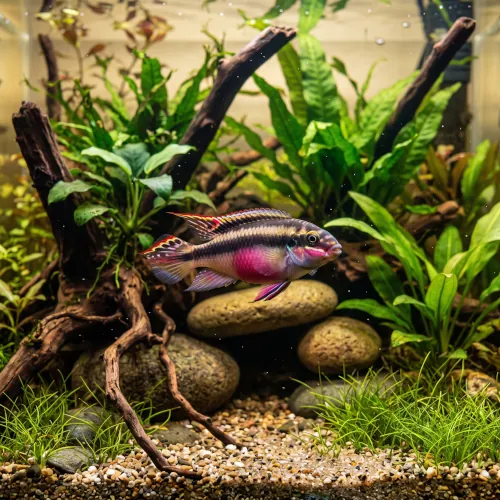

Nome popular principal
Kribensis
Kribensis, Ciclídeo-Pulcher, Ciclídeo-Kribensis
Ficha de peixe
Ciclídeos Anões
Um dos ciclídeos anões mais resistentes e fáceis de reproduzir, ideal para aquários comunitários bem estruturados.

Nome popular principal
Kribensis, Ciclídeo-Pulcher, Ciclídeo-Kribensis
Nome científico
Nome técnico essencial para taxonomia, cruzamento de manejo e referência editorial consistente.
Dificuldade de manejo
Use este nível como referência inicial, sempre considerando volume, estabilidade e compatibilidade do aquário.
Seção 1
Seção 2
Seções 4 a 6
Kribensis tem hábito alimentar onívoro. Excelente. 1 a 2 vezes ao dia. Alimenta-se facilmente de rações em flocos ou grânulos que afundam, enriquecidas com vegetais e pequenos alimentos vivos.
Fêmeas são menores, têm o ventre magenta ou rosado brilhante e nadadeiras arredondadas; machos são maiores, mais esguios e têm nadadeiras pontiagudas. Tipo de reprodução: Ovíparo. Dificuldade de reprodução: Fácil. A fêmea deposita os ovos dentro de cavernas ou cocos e ambos os pais cuidam intensamente dos alevinos após a eclosão.
Alta. Substrato recomendado: Areia fina de rio ou cascalho macio com cavernas de vaso ou coco. Necessidade de esconderijos: Alta. Aprecia aquários bem plantados e com diversos esconderijos de troncos, pedras e cascas de coco para nidificação.
Seção 7
Machos atingem cerca de 10 cm e fêmeas cerca de 8 cm, podendo viver mais de 5 anos sob bons cuidados.
Seção 8
A fêmea exibe uma mancha magenta ou roxa bem intensa no ventre e o casal começa a limpar uma caverna ou toca.
Sim, a presença de cavidades escuras (como cascas de coco ou vasos de barro) é essencial para o seu bem-estar e reprodução.
Um aquário a partir de 70 litros é suficiente para abrigar confortavelmente um casal e seus alevinos.